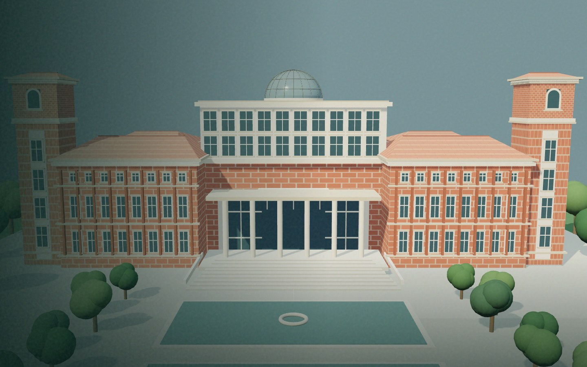
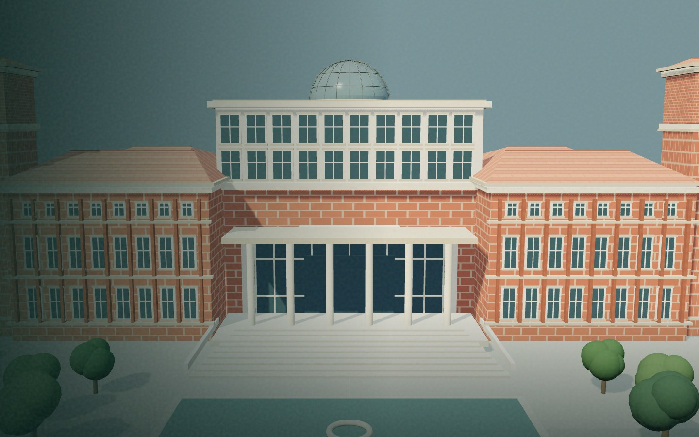
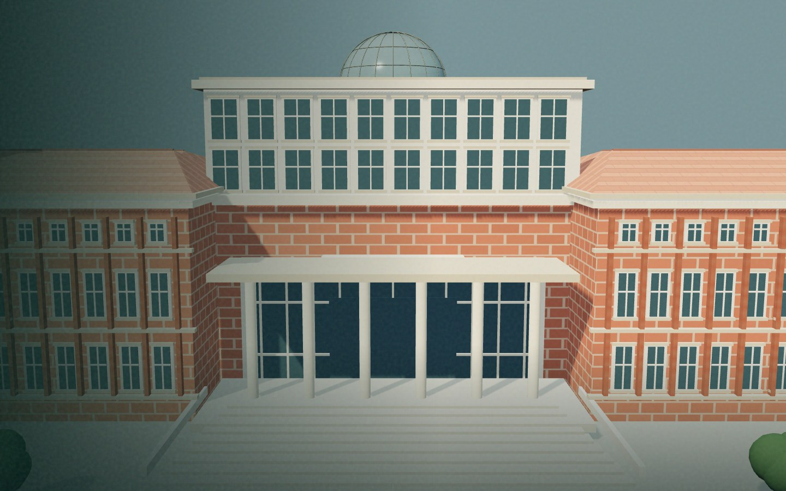
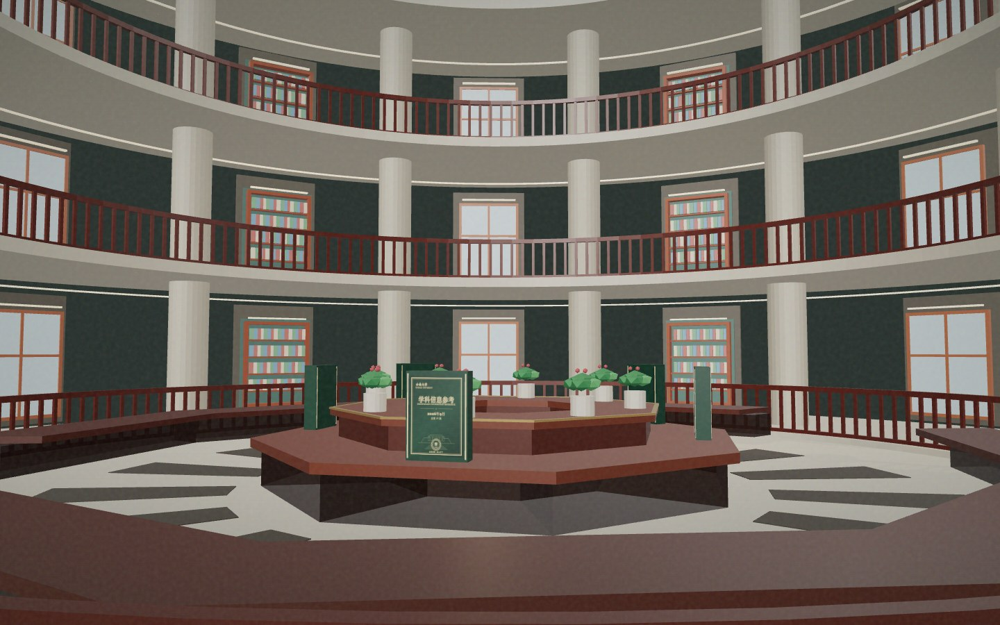
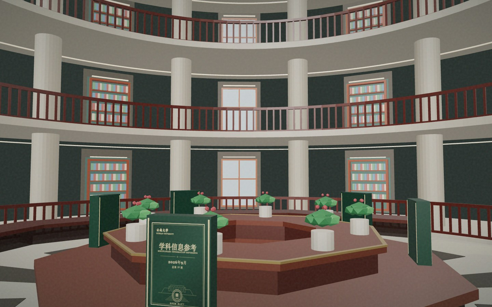
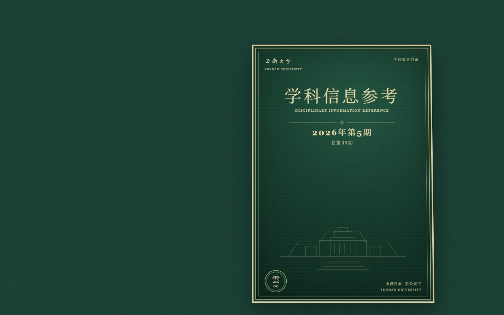

学科信息参考
DISCIPLINARY REFERENCE以双月刊物记录学科发展，将每一期整理为可持续翻阅的馆藏。

YUNNAN UNIVERSITY LIBRARY
学科信息参考 · 数字馆藏 · 数据阅览
最新一期 · 2026 年第 5 期（总第 39 期）已归档 ｜ 每期覆盖 ESI 22 个学科

学科情报阅览室 · DISCIPLINE INTELLIGENCE READING ROOM
最新一期：2026 年第 5 期（总第 39 期），已在中央展台。

总第 39 期 · 2026 年第 5 期

中央八角展台 · 历期报告

馆藏位置：学科情报特藏 A—01 · 点击期次，翻开阅览
BEHIND THE REPORT · 工作区介绍
一条确定性流水线，加一个人的判断权——
机器保数字，取舍你来定。
取数台一键导出，逐份核验；形成本期监测表，只动当期列。
监测表并入台账；台账只读，系统从不在上面写回。
全绿即出稿；缺哪张表哪一列，逐条写明，补上重跑。
人工约 5 分钟 · 机器 17 秒 · 现场一次真实生成约 20 秒
THE READING ROOM
从一本刊物出发，
看见云南大学学科信息的连续记录。
以双月刊物记录学科发展，将每一期整理为可持续翻阅的馆藏。
按期取阅；封面、目录、名词解释与报告全文，都在册页里。
从章节标题进入对应期次，先了解刊物的内容结构。
阅读常见专业术语说明，了解刊物中的基础概念。
CONTENT INDEX
检索目录标题与名词解释；
完整内容在册页中翻阅。
ASK WENHENG
基于台账与报告作答，数字可溯源。
做报告、查数据，一句话就行——期次它来认。
ABOUT THE COLLECTION
口径与边界全站只有一份；
数字一律可回溯到台账。

点击书页翻一页 · Esc 退出（真实版为完整翻书器）